Retro-Go Gaming
Retro-Go is a program to play old (but good!) games on ESP32-based devices, such as the Fri3d Camp 2024 Badge. The project consists of a "launcher" and a selection of the best applications and emulators, seriously optimized to require less CPU, memory and storage, without being less compatible!
Controls
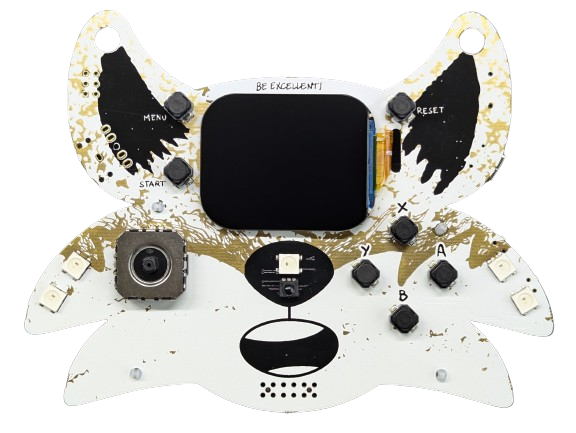
General buttons
RESET: restart the current appSTART+MENUtogether: Exit Retro-Go, return to the Fri3d App
Launcher buttons
Menu: Previous screenStart: Next screenX: "Options" menu:- Volume of the sound
- Audio out: "Buzzer" that is on the badge (silent and low quality) or "Ext(ernal) DAC" for the Communicator or other external speakers
- Wi-Fi options:
- Wi-Fi Access Point: activate it, connect to the hotspot and surf to http://192.168.4.1/ to manage the files on the badge
Y: Menu with "Find games" to search on your friends' badge for games that you don't have yetA: ActionB: Back- Up/Down: select menu setting
- Left/Right: Adjust menu settings
Buttons in NES and Gameboy (Color) games
Start: StartMenu: Select (almost never needed)AandB: Game buttons
Buttons in Doom
Menu: Switch weaponsStart: Use (door, button, switch)X: Options menuY: Game MenuA: Shoot (or hit)B: Walk fast or sideways
Add (or remove) games
Emulator games are often called "ROMs" that you can download from the Internet.
GameBoy (Color) ROMs usually have a .gb or .gbc extension, and NES games have a .nes extension. GameBoy Advance is not supported.
You can also create a .zip file with 1 ROM in it, so it uses less storage space.
Internal memory
To copy more games to the internal memory:
- turn on the retro-go hotspot on the badge (X button -> "Wi-Fi options" -> "Wi-Fi Access Point" and choose one, for example "retro-go-channel-3")
- connects to the hotspot from your laptop or phone
- surf to http://192.168.4.1/ from your laptop or phone
- now you will see a simple file manager that allows you to add and remove folders and files
- place your games ROMs in the folder
roms/gb,roms/gbcandroms/nes
External memory (micro SD card)
To manage the external memory, you can use the hotspot, just like you do for the internal memory. Or you can remove the micro SD card and work directly on it.
Fill micro SD card
The badge will attempt to use the micro SD card (formatted as FAT32, not exFAT or NTFS). If that doesn't work, he connects the internal memory.
When you insert a new micro SD card, it is recommended to first fill it with the latest default_files_config_and_games.zip from the releases page so that you have all the correct default settings, such as wifi networks.
Find games
If you would like to search for games that you do not have on a friend's badge, you can do so directly, without the need for a laptop or SD card reader!
It works in 3 steps:
1) your friend turns on his hotspot (X button -> "Wi-Fi options" -> "Wi-Fi Access Point" and choose one, for example "retro-go-channel-3")
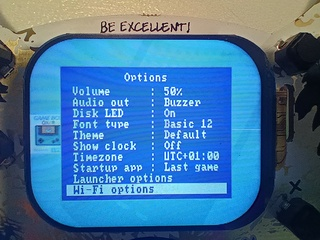
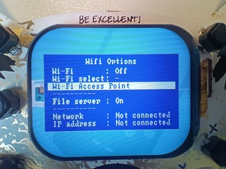
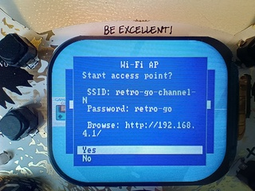
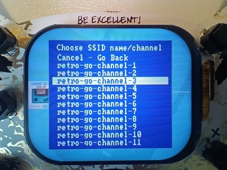
2) you connect to his hotspot (X button -> "Wi-Fi options" -> "Wi-Fi select" -> "retro-go-channel-3" your friend chose)
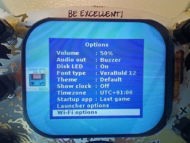
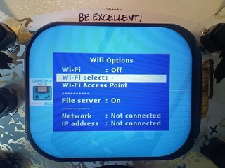
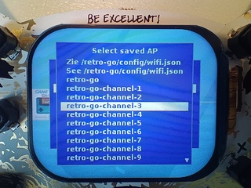
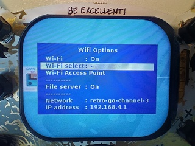
3) you are looking for games (Y button -> "Find games" -> choose a map)
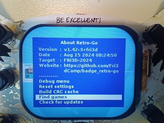
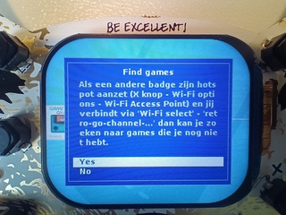
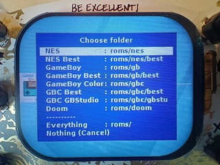
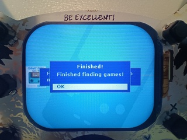
This might take a while, but if you get tired of it you can always stop it by restarting your badge.
If you get an error, try again - it will skip games you already have.
Tip: Put the best few games in a folder /roms/nes/best, /roms/gb/best or /roms/gbc/best and put your own games in /roms/gbc/gbstu so you can easily find them.
Make your own games
With GBStudio you can easily make different types of games for GameBoy Color. If you search for 'GBStudio' on YouTube you will find a really good playlist of videos that will quickly teach you everything you need to know.
About Retro-Go
Retro-go itself has support for the Fri3d Camp 2024 Badge but the derivative version badge_retro-go contains a lot more bells and whistles that are too specific for Fri3d Camp to be included in the general version.
Supported systems:
- Nintendo Entertainment System (NES)
- Gameboy
- Gameboy Color
- DOOM (also mods!)
There are other systems supported but they are not activated on the Fri3D Camp 2024 Badge because they are less popular or because they were a bit too slow.
Features:
- In-game menu
- Favorites and recently played games
- GameBoy color palettes, adjust and save clock
- NES color palettes, PAL ROMs, NSF support
- Options to scale and filter the screen
- Good performance and compatibility
- Turbo Speed/Fast Forward
- Cases and preview of saved game states
- Save multiple game states per game
- Manage files via wireless network
- Friend-to-friend game ROM sharing
- Piezoelectric buzzer control as primitive speaker
- Support for Fri3d Camp 2024 "Communicator" and other external speakers
Screenshots
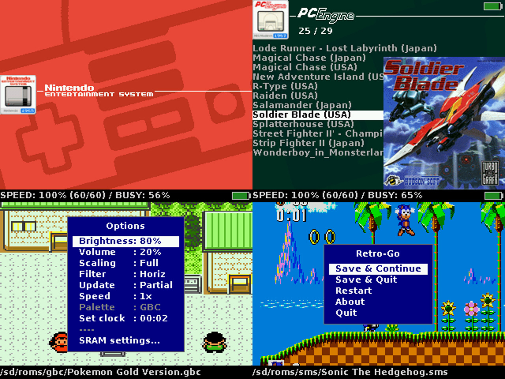